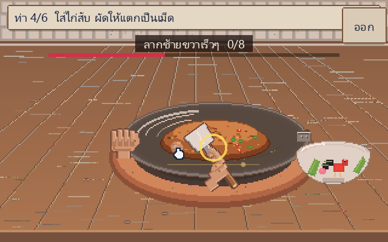
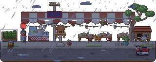
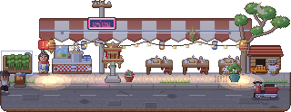

A little rice shop in a Thai soi that sits at the edge of your screen. The regulars grow older every day, and some come back to see Auntie at night.
Menus in English: pick English under Decor › Settings › Language. The menus, buttons, hints and the names of things are translated; the story is still in Thai for now.

Start from an empty lot in the soi: scavenge and sell, then build a push cart, a stall and finally a shop.
Where it sits on your screen
Left alone it is just the shop: no frame, no background, always on top, even over other windows. Move the mouse close and the menu bar appears.

- On first start it sits in the bottom-right corner, just above the taskbar.
- To move it, drag Auntie or the four-arrow button in the bottom-left corner; the game remembers.
- Clicks on the empty space around the shop go through to the programs behind it.
- Want it bigger? Set it up to 4x in the settings.
Cook a dish yourself through Auntie's hands: beat the egg, stir-fry the basil, toss the wok. Cook it well and it sells for more. Busy? Let her cook.


Grow morning glory, holy basil, chillies and lemongrass; keep hens for eggs, hatch chicks and name them.

Rain, morning mist and the cool wind follow the Thai seasons, the same for everyone on the same day, and Loy Krathong comes on the real calendar.

Five regulars live their lives on real days: one day is a year of theirs. They grow older, change jobs and come to tell Auntie about it.
Uncle Chalerm: When I was young I ate at Somsri's every evening.
Trailer
- Game time follows your real clock.
- Close the game and the shop carries on; Auntie tells you what happened when you come back.
- Press the vegetable count on the top bar to see the storage; her notebook counts the shop's days.
- No ads, no in-app purchases.


At night the lights come on, and some nights a Thai ghost drops by: once a night, and only if you click. Nothing jumps at you, and a quiet mode keeps them away.
- Press Download and open the RanNeeLae-Setup.exe you get.
- If Windows says "Windows protected your PC", press More info and then Run anyway. The game has no paid yearly code-signing certificate, so Windows only warns the first time.
- Click through the installer and start the game from the rooster icon in the Start menu. No admin rights needed.
Questions
How do updates work?
No need to download the whole game again. The game checks when it starts; if there is a new version a "โหลดอัปเดต" (download update) button appears under the top bar. Updates are small and signed, and the game checks the signature every time. Press it, then restart the game. You can turn the check off in the settings. The installer on this page is always the newest version.
What does the game use the internet for?
Only to check for updates when it starts. Your save stays on your computer and nothing else is sent.
Will I lose my save if I uninstall?
Uninstall from Settings › Apps › ร้านนี้แหละ. The uninstaller asks whether to delete the save; keep it and a reinstall carries on where you left off.
How do I know the files weren't changed?
Compare the SHA-256 of your file with SHA256SUMS.txt on the releases page.
Found a problem, or want to say something?
Write it in the comments below, or open an issue on GitHub, in English or Thai. The game is still a test build, so every note helps a lot.
Say something
- Loading…